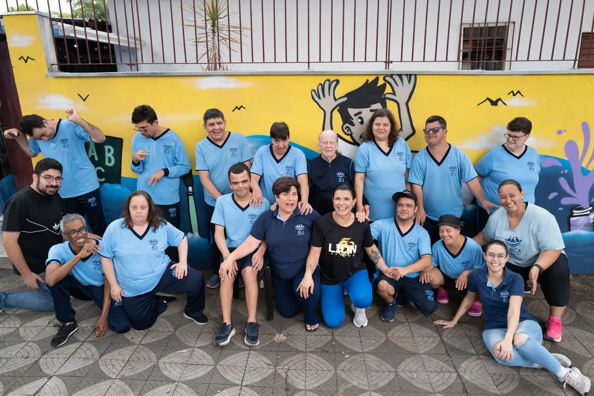
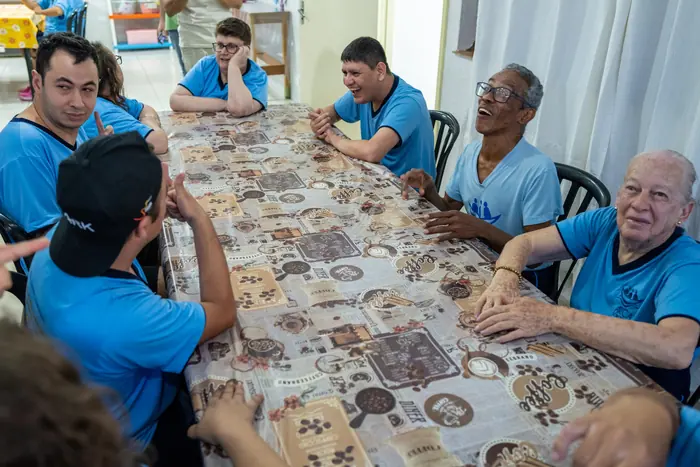
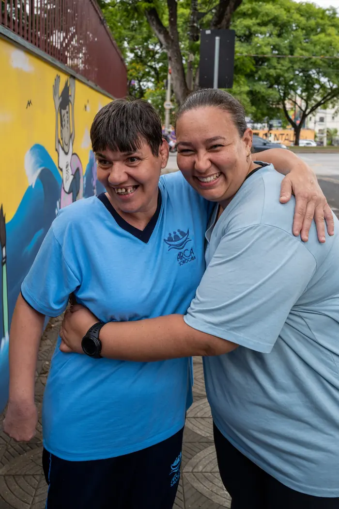
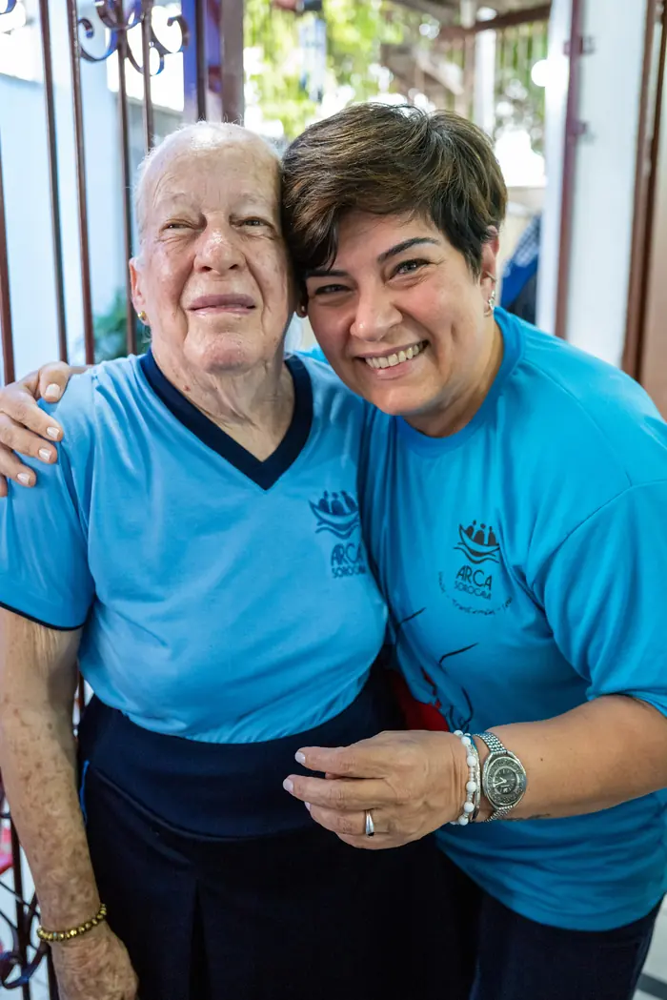
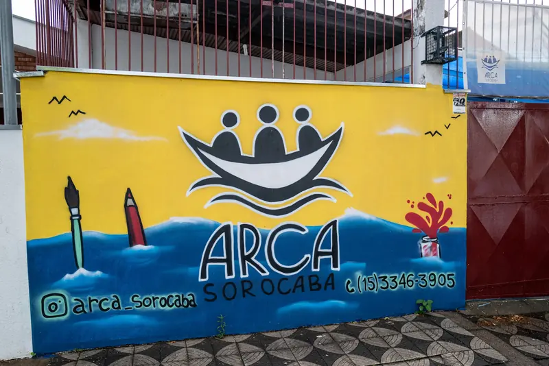
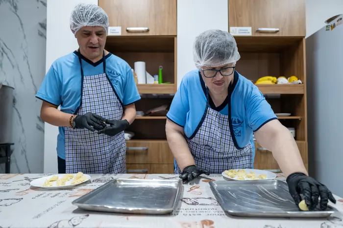
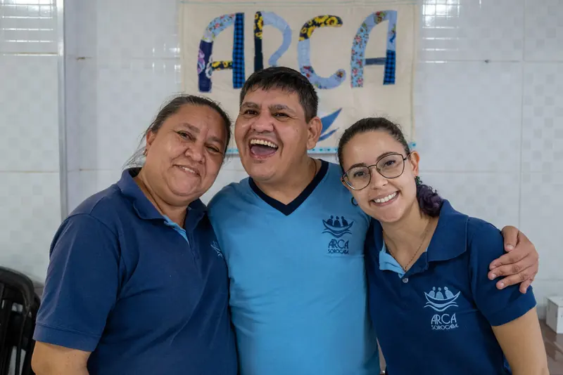

Tudo começou com uma palestra, em novembro de 2012.
Conheça como nasceu a ARCA Sorocaba, a nossa “Casa São Francisco”, e o caminho que nos trouxe até aqui: lado a lado com as pessoas com deficiência intelectual e as suas famílias.

De um convite a uma casa de portas abertas
-
Novembro de 2012
Uma palestra que abriu portas
Em 12 de novembro de 2012, Padre Paulo Gonzales convidou alguns membros da Paróquia São Paulo Apóstolo, em Sorocaba, para uma palestra sobre a ARCA. Ali começou esta história, que abriu as portas da “Casa São Francisco”, como internamente a chamamos, a duas oficinas ocupacionais para pessoas com deficiência intelectual, com o grande desejo de se tornar um projeto comunitário dentro da Federação Internacional de Comunidades ARCA.
A palestra, ministrada por um membro fundador da ARCA do Brasil em São Paulo, falou sobre as comunidades ARCA, sobre o que caracteriza a vida compartilhada com pessoas com deficiência intelectual e sobre a necessidade de iniciativas como esta, num momento em que Sorocaba vivia o fechamento de vários hospitais psiquiátricos.

-
Dezembro de 2012
Os primeiros encontros
Em dezembro daquele mesmo ano, Arlindo Garcia Filho e Maria Cristina Funes Garcia participaram de uma formação na Argentina com o tema “Como fundar novas comunidades”. Com a disponibilidade desse casal, começaram os primeiros encontros com pessoas interessadas em conhecer as comunidades ARCA.
Tudo aconteceu rápido e com intensidade. Naquele mesmo mês, recebemos a visita de responsáveis pela Federação Internacional de Comunidades ARCA e de uma Representante Internacional para a América Latina, que queriam conhecer esse novo grupo que crescia tão depressa e se mostrava envolvido com a situação da pessoa com deficiência intelectual.
A partir daí, o grupo já reunia 30 pessoas, com e sem deficiência intelectual, que se encontravam pelo menos duas vezes por mês para falar sobre a deficiência intelectual e, principalmente, sobre a necessidade de tratar cada pessoa com amor, respeito e dignidade.
-
Fevereiro de 2013
Tempo de reflexão e discernimento
Em fevereiro de 2013 começou um tempo de reflexão e discernimento. Foi um ano de estudo do documento “Guia Como Fundar uma Comunidade ARCA”, com reuniões formais duas vezes por mês. Um grupo de 20 pessoas passou a refletir sobre identidade, enculturação e organização, preparando-se para a missão à qual foi chamado e disposto a viver as consequências e os desafios dessas escolhas pelos irmãos mais frágeis e necessitados.
Durante esse tempo, o grupo visitou a Comunidade ARCA do Brasil, em São Paulo, para sentir e viver a experiência junto às pessoas com deficiência. Algumas vezes, passou finais de semana lá, vivendo essa realidade de perto.
Também foram visitadas escolas, hospitais e outras organizações de Sorocaba, para conhecer outras realidades de pessoas com deficiência. E recebemos a coordenadora da organização “Fé e Luz”, irmã da ARCA, para conhecermos esse trabalho.

-
2013
Visitas às famílias
Começamos a estruturar um programa de visitas às famílias de pessoas com deficiência. Foram identificadas 15 famílias, que passamos a visitar periodicamente, com encontros festivos e passeios.
O trabalho de reflexão avançava, sempre guiado pelo “Guia Como Fundar uma Comunidade ARCA”. Desse discernimento nasceram os enunciados de identidade, missão e visão do nosso grupo.

-
Agosto de 2013
Nasce a ABAAS
Em agosto de 2013, demos um grande passo rumo à legalização e ao apoio do trabalho: fundamos a Associação Beneficente Amigos da Arca de Sorocaba (ABAAS). Em Assembleia Geral, aprovamos o estatuto e formamos a Diretoria e o Conselho Fiscal, que nos ajudariam a fortalecer a identidade e a missão do grupo.

-
Novembro de 2013
O caminhar com as famílias
Em novembro de 2013, depois de intensas reflexões, o grupo entendeu e decidiu que o modelo comunitário seria vivido, naquele momento, por meio do caminhar com as famílias das pessoas com deficiência intelectual. Para esse caminhar, seriam criados projetos de visitas, encontros, orientação profissional terapêutica, passeios, atividades manuais e artísticas, oficinas e outros.
Em um segundo momento, a vida comunitária também poderia ser vivida em um Centro de Convivência para pessoas com e sem deficiência intelectual.
-
2014
Os primeiros passos para se manter
Em 2014 começaram os trabalhos da ABAAS para organizar e concretizar o futuro da ARCA, com a arrecadação de fundos por meio do bazar e da venda de alimentos, com a colaboração total da Paróquia São Paulo Apóstolo e com a visão de realizar um grande evento que pudesse trazer muitos benefícios.


Caminhando lado a lado com as famílias
Historicamente, as pessoas com deficiência sofrem com a marginalização e a exclusão. A família que tem uma pessoa com deficiência acaba vivendo momentos de ruptura: muitas vezes interrompe suas atividades sociais pelo cuidado exclusivo, pela falta de acesso a serviços ou até por vergonha da deficiência.
Pensando nessas rupturas, a ARCA Sorocaba entendeu que, para ser sinal de relações transformadoras entre pessoas com e sem deficiência intelectual, além de acolher em nossas oficinas, é necessário caminhar junto com as famílias que vivem em situação de exclusão e vulnerabilidade.
Essa história continua com você.
Há mais de 14 anos, a ARCA existe porque pessoas comuns decidiram caminhar juntas. Seja parte do próximo capítulo.